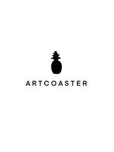

Trade Mark Journal No.2025/044 31 October 2025
UK00004280150 18 October 2025 (16)

- Class 16
- Sketchbooks; Sketches; Drawing pencils; Painting pencils; Drawing paper; Drawing pens; Drawings; Drawing brushes; Sketch books; Notebook paper; Drawing ink; Drawing books; Notebooks; Writing or drawing books; Papers for painting and calligraphy; Pencils; Blank journal books; Drawing pads; Art paper; Drawing materials; Pen and pencil boxes; Notebook covers; Colouring pencils; Pencils for colouring; Drawing instruments; Sketch pads; Painting books; Blank writing journals; Art prints; Pen or pencil holders; Cartoon prints; Pencil boxes; Art pictures; Scribble pads; Colour pencils; Fibre-tip markers; Marker pens; Dry erase markers; Fiber-tip markers; Highlighting markers; Felt tip markers; Fine art prints; Paper for use in the graphic arts industry; Scribbling pads; Pads of paper; Pads for applying paint; Coloring books; Colouring books; Books; Leather book covers; Book covers; Writing paper; Note books; Writing paper pads; Works of art made of paper; Craft paper; Paper; Paper crafts materials; Paper and cardboard; Printed art reproductions; Fine paper; Kraft paper; Papers for use in the graphic arts industry; Felt-tip pens; Felt marking pens; Highlighter pens; Pen boxes; Ink for pens; Pen refills; Pen nibs; Pen sets; Brush pens; Paint boxes and brushes; Pen ink refills; Ink pens; Coloured pens; Colour pens; Pens; Colouring pens; Felt pens; Artists' pens; Felt writing pens; Felt tip pens; Pen cases; Notepads; Coloured pencils; Nibs; Pencil cases; Color pencils.
Malaika Yasmin Ajmal